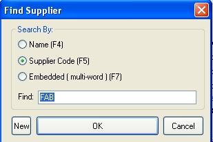

|
Supplier Search
|
Previous Top Next |

| · | Name – search by the supplier name.
|
| If more than one supplier fits the name search criterion, the List view of suppliers will open in alphabetical order from the name you requested. Scroll down the list and click on the one you require. Then click the Supplier tab or just double click the supplier.
|
| If the supplier has been is identified uniquely, then the Supplier tab for the selected supplier will open.
|
| · | Supplier Code - type in the supplier code.
|
| · | Embedded - This is a powerful search that will look for a word or phrase in several fields of the supplier master. Type your search string into the Find field and press the Enter key. The program will search for any occurrence of your string in any of these fields: name, postal address, returns address, short comments, supplier abstract (long comments), email address, phone numbers and main contact.
|
| If only one supplier meets your search criterion, that supplier will be displayed.
|
| If more than one supplier is found, a pop up browser window will be displayed from which you can choose the supplier you want.
|